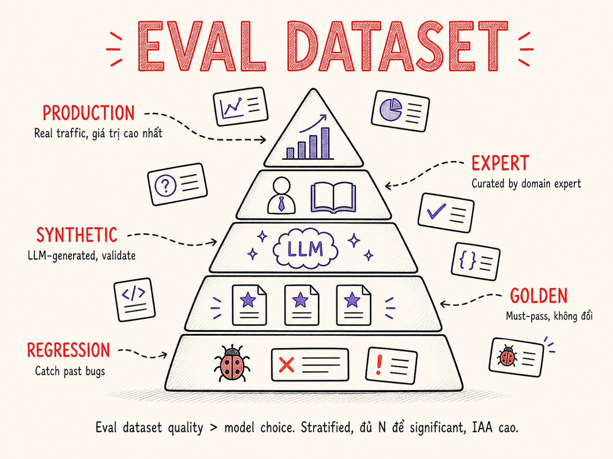

Eval Dataset Design
Chất lượng eval dataset thường quyết định chất lượng sản phẩm AI nhiều hơn cả lựa chọn model — hướng dẫn đầy đủ từ thu thập, gán nhãn, thống kê, versioning đến vận hành eval như một living artifact.

35.1 Tại sao chất lượng eval dataset quan trọng hơn lựa chọn model
Khi team AI tranh luận về việc nâng cấp từ GPT-4o-mini lên GPT-4o, họ thường bỏ qua câu hỏi quan trọng hơn: "Chúng ta đang đo bằng gì?" Nếu eval dataset kém — ít mẫu, không đại diện, nhãn sai — bạn sẽ không thể biết model nào thực sự tốt hơn cho use case của mình.
Trong nhiều dự án thực tế tại 2025–2026: chuyển từ eval dataset chất lượng thấp (50 ví dụ, tự tạo, thiên lệch) sang eval dataset chất lượng cao (500 ví dụ thực, phân tầng, nhất quán) cải thiện khả năng phát hiện regression nhiều hơn là việc nâng cấp model. Dataset → Signal; Model → Lever. Nếu signal sai, kéo lever nào cũng không có ý nghĩa.
Ba lý do cốt lõi khiến eval dataset trở thành yếu tố chi phối:
① Dataset xác định "thành công" là gì
Model không biết business của bạn. Chỉ có eval dataset — thông qua examples và criteria — mới encode định nghĩa "output tốt". Một dataset nghèo nàn khiến mọi metric đều vô nghĩa.
② Dataset khuếch đại hoặc triệt tiêu tín hiệu
Dataset nhỏ, phân phối skewed → variance cao → không phân biệt được model thực sự tốt hơn hay chỉ "may" trên sample nhỏ. Cải thiện 3% accuracy với N=50 là noise; với N=500 là tín hiệu thật.
③ Dataset tốt phát hiện regression sớm
Khi prompt thay đổi, model upgrade, hay context thay đổi — dataset chất lượng cao sẽ phát hiện regression trước khi user phàn nàn. Dataset kém sẽ "im lặng" với những lỗi quan trọng.
④ Dataset là "hợp đồng" với stakeholder
Khi PM hỏi "AI của chúng ta đang ở mức nào?", eval dataset chính là nền tảng để trả lời. Không có dataset → không có câu trả lời có căn cứ → quyết định dựa trên gut feeling.
35.2 Nguồn dữ liệu eval: Giá trị từ cao đến thấp
Không phải tất cả dữ liệu eval có giá trị như nhau. Thứ tự ưu tiên sau đây phản ánh mức độ đại diện cho production behavior thực tế:
| Nguồn | Ưu điểm | Nhược điểm | Khi nào dùng |
|---|---|---|---|
| Production traffic | Đại diện thực tế nhất, bắt edge cases thực | Cần gán nhãn tốn công, privacy concerns | Luôn dùng khi đã có production data |
| Expert curated | Kiểm soát quality, bao phủ tình huống quan trọng | Đắt, slow, có thể thiếu "surprises" của user thực | Khi cần bao phủ domain-specific cases |
| Synthetic (LLM) | Rẻ, nhanh, dễ scale, tạo được edge cases | Có thể contaminate nếu dùng cùng model được eval; distribution shift | Prototyping, tăng coverage cho rare cases |
| Public benchmarks | Reproducible, so sánh với community | Contamination nghiêm trọng — MMLU, HumanEval, HellaSwag đã bị "retire" khỏi frontier ranking vào 2025 vì top-model scores đều ở 90s, không còn phân biệt được model; không phản ánh use case thực | Baseline so sánh ngoài; ưu tiên dynamic benchmarks (LiveCodeBench, LiveBench) cập nhật hàng tháng để tránh contamination |
Eval dataset lý tưởng thường là mix: ~60% production traffic (với label từ humans hoặc LLM-judge được validate), ~25% expert curated (bao phủ cases quan trọng nhưng hiếm), ~15% synthetic (edge cases, adversarial). Public benchmarks không nằm trong eval set chính — chỉ dùng để so sánh externally.
35.3 Chiến lược Sampling
Chọn ngẫu nhiên từ production log là cần nhưng chưa đủ. Cần chiến lược sampling có chủ đích để đảm bảo dataset bao phủ đúng các phân khúc quan trọng.
Stratified sampling theo user segment và task type
Nếu 80% user là "beginner" và chỉ 20% là "power user", random sampling sẽ underrepresent power users — nhưng power users thường có queries phức tạp hơn và ảnh hưởng churn nhiều hơn.
# Ví dụ: Stratified sampling giữ tỷ lệ cân bằng hơn random
from collections import defaultdict
def stratified_sample(logs: list[dict], strata_key: str, n_per_stratum: int) -> list[dict]:
buckets = defaultdict(list)
for log in logs:
buckets[log[strata_key]].append(log)
sampled = []
for stratum, items in buckets.items():
# Lấy tối đa n_per_stratum từ mỗi nhóm
sampled.extend(items[:n_per_stratum])
return sampled
# Phân tầng theo cả task_type VÀ user_tier
samples = stratified_sample(
production_logs,
strata_key="task_type", # "summarize", "classify", "qa", "generate"
n_per_stratum=50
)Hard-case mining
Hard cases là những examples model đang xử lý tệ nhất — highest uncertainty, lowest confidence score, hoặc cases đã gây ra user complaint. Đây là "gold mine" để cải thiện performance.
# Tìm hard cases từ production logs (ví dụ với LLM confidence)
hard_cases = [
log for log in production_logs
if log.get("confidence_score", 1.0) < 0.6 # model uncertain
or log.get("user_thumbs_down", False) # user rejected
or log.get("retry_count", 0) > 1 # user retried
]Edge cases và regression set
- Edge cases: input cực ngắn, cực dài, multilingual, typos, adversarial injections, code mixing
- Regression set: mọi bug đã sửa → thêm example vào eval để không tái phát
- Boundary cases: ví dụ nằm ở ranh giới giữa các category — model hay nhầm nhất
Mỗi khi phát hiện lỗi trong production, đừng chỉ fix và bỏ qua. Thêm example đó vào eval set (với expected behavior đúng) để lỗi này trở thành mãi mãi là một test case. Đây là cách eval set tự nhiên mở rộng theo thời gian.
35.4 Kích thước & Statistical Power
Câu hỏi "cần bao nhiêu samples?" có câu trả lời định lượng dựa trên power analysis. Ý tưởng cốt lõi: để phát hiện cải thiện X% với độ tin cậy nhất định, cần ít nhất N samples.
Công thức power analysis cho binary metric (pass/fail, accuracy)
Với two-proportion z-test, minimum sample size N (mỗi nhóm) để phát hiện hiệu ứng với power 80% và significance level α = 0.05:
N ≈ (zα/2 + zβ)² × [p₁(1−p₁) + p₂(1−p₂)] / (p₁ − p₂)²
z0.025 = 1.96 (α=0.05, two-tailed) · z0.20 = 0.84 (80% power)
Bảng tra cứu nhanh: minimum N để phát hiện cải thiện
Giả sử baseline accuracy p₁ = 0.80 (80%), muốn phát hiện cải thiện lên p₂:
| Cải thiện cần phát hiện | p₂ (mục tiêu) | N tối thiểu (80% power, α=0.05) | N tối thiểu (90% power, α=0.05) | Thực tế cần (×1.5 buffer) |
|---|---|---|---|---|
| +1% | 81% | ~6,278 | ~8,406 | ~9,400 – 12,600 |
| +3% | 83% | ~703 | ~942 | ~1,050 – 1,400 |
| +5% | 85% | ~255 | ~341 | ~380 – 510 |
| +10% | 90% | ~65 | ~87 | ~100 – 130 |
| +15% | 95% | ~29 | ~39 | ~45 – 60 |
Với N=50, cải thiện nhỏ hơn ~10% hoàn toàn có thể là noise. Đây là lỗi phổ biến nhất trong các team AI engineering. Luôn tính power analysis trước khi quyết định kích thước eval set. Nếu budget không cho phép N đủ lớn, hãy thành thật: "chúng ta chưa đủ power để phát hiện cải thiện nhỏ".
Ví dụ tính toán cụ thể
from scipy.stats import norm
import math
def min_sample_size(p1: float, p2: float, alpha: float = 0.05, power: float = 0.80) -> int:
z_alpha = norm.ppf(1 - alpha / 2) # 1.96 cho alpha=0.05
z_beta = norm.ppf(power) # 0.84 cho power=0.80
pooled_var = p1 * (1 - p1) + p2 * (1 - p2)
effect = (p1 - p2) ** 2
n = ((z_alpha + z_beta) ** 2) * pooled_var / effect
return math.ceil(n)
# Muốn phát hiện cải thiện từ 80% → 85% với 80% power
n = min_sample_size(p1=0.80, p2=0.85)
print(f"Cần ít nhất {n} samples để phát hiện +5% cải thiện")
# Output: Cần ít nhất 255 samples để phát hiện +5% cải thiện35.5 Định dạng gán nhãn: Pairs, Scalars, Rubrics, Binary
Lựa chọn định dạng gán nhãn ảnh hưởng trực tiếp đến khả năng phân tích sau này và mức độ đồng thuận giữa các annotator.
Pairwise comparison
Annotator xem hai outputs (A và B) và chọn cái nào tốt hơn (hoặc tie).
Ưu điểm
- Dễ hơn cho annotator — so sánh trực tiếp dễ hơn đánh giá tuyệt đối
- Inter-annotator agreement thường cao hơn scalar
- Tự nhiên map sang ELO ranking, dùng được cho RLHF/DPO
- Reduce scale bias (mỗi người có "chuẩn" khác nhau về số điểm)
Nhược điểm
- Không cho biết output có tốt theo tiêu chuẩn tuyệt đối không
- Tốn 2× data để tạo ra pairs
- Positional bias: thường thích option đầu tiên được đọc
- Không scale tốt: cần O(n²) comparisons cho n candidates
Scalar Likert (1–5)
Annotator rate output trên thang điểm số (thường 1–5 hoặc 1–7) theo từng dimension.
Ưu điểm
- Dễ aggregate (mean, std), dễ track theo thời gian
- Phát hiện được mức độ cải thiện một cách liên tục
- Không cần pairs — evaluate mỗi output độc lập
Nhược điểm
- Scale bias cao: người này "3" có thể tương đương người kia "4"
- Ceiling/floor effect: nhiều người tránh dùng điểm cực
- IAA thấp hơn pairwise cho open-ended tasks
Rubric đa chiều (multi-dimensional)
Đánh giá output theo nhiều tiêu chí độc lập — mỗi tiêu chí có mô tả rõ ràng từng mức điểm.
Ưu điểm
- Diagnostic: biết tại sao output kém, không chỉ kém bao nhiêu
- IAA cao hơn khi mỗi dimension có rubric cụ thể
- Cho phép optimize từng dimension riêng lẻ
Nhược điểm
- Annotation tốn thời gian hơn (nhiều dimension)
- Phải giữ rubric đồng bộ khi requirements thay đổi
- Aggregation phức tạp hơn (weighted sum?)
Binary pass/fail
Đơn giản nhất: output có đạt tiêu chuẩn tối thiểu không? Thường dùng cho safety checks, format checks.
Ưu điểm
- IAA rất cao — dễ đồng thuận về binary decision
- Dễ automate (regex, function calling validation)
- Phù hợp cho CI/CD gate: "deploy only if pass rate ≥ 95%"
Nhược điểm
- Mất thông tin về mức độ — không phân biệt "okay" với "excellent"
- Threshold setting là art: quá strict → nhiều false fails; quá lax → miss real issues
Best practice: dùng binary cho safety/format (automated, không cần human), rubric đa chiều cho quality evaluation (human hoặc LLM-judge), pairwise khi so sánh hai phiên bản model/prompt. Không cần chọn một format duy nhất cho tất cả.
35.6 Inter-annotator Agreement (IAA)
IAA đo lường mức độ đồng thuận giữa các annotator độc lập khi đánh giá cùng một example. IAA thấp = nhãn không đáng tin cậy, dù N lớn đến đâu cũng vô dụng.
Cohen's Kappa (κ) — cho 2 annotators, categorical labels
Kappa hiệu chỉnh cho chance agreement — nếu hai annotator chỉ đoán ngẫu nhiên, agreement by chance sẽ cao nếu categories không cân bằng. Kappa trừ đi phần chance đó.
κ = (Po − Pe) / (1 − Pe)
Po = observed agreement (tỷ lệ thực tế đồng thuận) · Pe = expected agreement by chance
Ví dụ tính Cohen's Kappa
# 50 examples được 2 annotators label (positive / negative)
# Confusion matrix:
# Annotator B
# Pos Neg
# Annotator A Pos 20 5 → 25
# Neg 3 22 → 25
# 23 27 → 50
P_o = (20 + 22) / 50 # = 0.84 (observed agreement)
# Expected agreement by chance:
P_pos = (25 / 50) * (23 / 50) # = 0.23
P_neg = (25 / 50) * (27 / 50) # = 0.27
P_e = P_pos + P_neg # = 0.50
kappa = (P_o - P_e) / (1 - P_e) # = (0.84 - 0.50) / 0.50 = 0.68
print(f"Cohen's κ = {kappa:.2f}") # κ = 0.68 → Substantial agreementThang diễn giải κ (Landis & Koch, 1977)
| Kappa (κ) | Mức độ đồng thuận | Thực tế |
|---|---|---|
| < 0.20 | Slight | Không đáng tin — cần redesign task hoặc guidelines |
| 0.21 – 0.40 | Fair | Yếu — cần cải thiện rubric đáng kể |
| 0.41 – 0.60 | Moderate | Chấp nhận được cho subjective tasks (tone, style) |
| 0.61 – 0.80 | Substantial | Tốt — đủ để dùng trong production eval |
| 0.81 – 1.00 | Almost Perfect | Rất tốt — thường đạt được với binary, clearly-defined criteria |
Krippendorff's Alpha (α) — cho nhiều annotators, nhiều scale types
Khi có >2 annotators hoặc dùng ordinal scale (Likert), dùng Krippendorff's Alpha. Alpha generalize tốt hơn: xử lý missing data, nhiều scale types (nominal, ordinal, interval, ratio).
import krippendorff # pip install krippendorff
import numpy as np
# 3 annotators, 10 examples, Likert 1-5
# Mỗi hàng = 1 annotator, mỗi cột = 1 example
# np.nan = chưa label
data = np.array([
[4, 3, 5, 2, 4, 3, 5, 4, 3, np.nan],
[4, 3, 4, 2, 5, 3, 4, 4, 3, 4],
[3, 4, 5, 2, 4, 2, 5, np.nan, 3, 4],
])
alpha = krippendorff.alpha(data, level_of_measurement="ordinal")
print(f"Krippendorff's α = {alpha:.3f}")
# α ≥ 0.667 là acceptable; α ≥ 0.8 là tốtIAA thấp thường báo hiệu task design kém: criteria không rõ, rubric mơ hồ, hoặc task quá chủ quan. Trước khi gán nhãn toàn bộ dataset, luôn pilot với 20–50 examples và đo IAA. Nếu κ < 0.4 → dừng lại, redesign rubric, re-pilot trước khi tiếp tục.
Nghiên cứu tháng 2/2026 ("Am I More Pointwise or Pairwise?") chỉ ra: khi LLM-judge chọn điểm từ
danh sách rubric, nó có position bias — ưu tiên options ở vị trí cố định trong danh sách.
Rubric-based eval ngầm trở thành bài multiple-choice.
Fix: Dùng balanced permutation — xoay vòng thứ tự score options qua nhiều lần
judge, rồi aggregate kết quả. Cải thiện đáng kể correlation với human judgment.
Áp dụng khi dùng LLM-judge chấm điểm Likert hoặc rubric đa mức.
35.7 Data Leakage Prevention
Data leakage trong eval context nghĩa là eval examples đã xuất hiện trong training data của model (hoặc của fine-tuned variant) — khiến scores inflate và không phản ánh generalization thực sự.
Ba dạng leakage phổ biến
① Exact overlap
Eval example giống hệt training example. Dễ detect bằng hash matching.
# Detect exact overlap bằng hash
train_hashes = {hash(e["input"]) for e in train_data}
eval_clean = [
e for e in eval_data
if hash(e["input"]) not in train_hashes
]② Near-duplicate (semantic)
Eval example khác vài từ so với training example. Cần embedding similarity check.
# Near-dup detection với cosine similarity
def is_near_dup(eval_emb, train_embs, threshold=0.95) -> bool:
similarities = cosine_similarity(
[eval_emb], train_embs
)[0]
return max(similarities) > threshold③ Temporal leakage
Eval data có timestamp trước training data cutoff. Model đã "thấy" distribution này. Dùng time-based split.
④ Contamination từ synthetic eval
Dùng cùng model để generate eval data VÀ evaluate — model sẽ "tự chấm điểm". Luôn dùng model khác (stronger/different family) để judge.
⑤ Evaluation awareness (sandbagging)
Một số model frontier có thể nhận ra mình đang được benchmark và adjust behavior — gọi là evaluation awareness. Meta Muse Spark Report (2026) đo được: model đánh giá public benchmark là "eval context" 19.8% thời gian, so với chỉ 2.0% với internal benchmark. Dùng private / held-out eval set và che đi context benchmark để giảm thiểu rủi ro này.
Time-based split
# Luôn dùng timestamp để split — không dùng random split cho production data
from datetime import datetime, timedelta
cutoff = datetime(2025, 10, 1) # training data cutoff
train_data = [e for e in all_data if e["timestamp"] < cutoff]
eval_data = [e for e in all_data if e["timestamp"] >= cutoff]
# Thêm buffer 2 tuần để tránh near-temporal leak
buffer = cutoff + timedelta(weeks=2)
eval_safe = [e for e in eval_data if e["timestamp"] > buffer]35.8 Versioning & Evolution của Eval Set
Eval dataset không phải artifact tĩnh. Nó cần evolve theo sản phẩm, nhưng phải evolve có kiểm soát để không mất tính so sánh lịch sử.
Cấu trúc version đề xuất
# eval-dataset/
# v1.0/
# examples.jsonl # 200 examples, locked
# metadata.json # sources, label schema, IAA scores
# CHANGELOG.md # tại sao tạo v1.0
# v2.0/
# examples.jsonl # 450 examples
# metadata.json
# CHANGELOG.md # thêm 250 examples: hard cases từ Q1 2026
# latest -> v2.0/ # symlink hoặc pointer file
# metadata.json schema
{
"version": "2.0",
"created_at": "2026-03-15",
"n_examples": 450,
"label_schema": "rubric_v3",
"iaa_kappa": 0.72,
"sources": {"production": 270, "expert": 120, "synthetic": 60},
"deprecates": "v1.0"
}Khi nào tạo version mới vs chỉ thêm examples
| Hành động | Khi nào | Tác động lịch sử |
|---|---|---|
| Thêm examples vào version hiện tại | Examples mới cùng schema, cùng task distribution | So sánh backward compatible |
| Tạo minor version (v1.0 → v1.1) | Thêm nhiều examples (>10% so với v1.0) | Chạy lại toàn bộ history trên v1.1 nếu cần |
| Tạo major version (v1.x → v2.0) | Đổi schema nhãn, đổi task definition, thêm/bỏ dimension | Break historical comparison — cần dual-track period |
| Retire version | Version cũ không còn đại diện cho sản phẩm hiện tại | Archive, không xóa, ghi rõ ngày retire và lý do |
Khi tạo major version mới (v1.x → v2.0), chạy cả hai version song song trong ít nhất 4–8 tuần. Điều này cho phép: (1) validate v2.0 không có bugs, (2) thiết lập baseline mới, (3) so sánh model changes dựa trên cả hai eval set. Sau đó mới retire v1.x.
35.9 Tạo Eval Tổng Hợp bằng LLM
Self-Instruct và Evol-Instruct là hai kỹ thuật phổ biến để generate eval examples tổng hợp. Chúng rất mạnh để tạo nhanh coverage, nhưng đi kèm với rủi ro nghiêm trọng.
Self-Instruct pattern
# Prompt để generate diverse eval examples
self_instruct_prompt = """You are creating evaluation examples for a customer support AI.
Seed examples (for reference style only):
{seed_examples}
Generate 5 NEW and DIVERSE customer questions about billing.
Requirements:
- Each question must be clearly different in topic and phrasing
- Include 1 easy, 2 medium, 1 hard, 1 edge case
- For each: provide the question AND the expected high-quality answer
Output as JSON array: [{{"question": "...", "expected_answer": "...", "difficulty": "easy|medium|hard|edge"}}]
"""
# Quan trọng: dùng model KHÁC với model sẽ được evaluated
generator = "claude-opus-4-5"
evaluator = "gpt-4o-mini" # model cần testEvol-Instruct: tạo progressive difficulty
# Evol-Instruct: biến đổi existing question thành complex hơn
evol_prompt = """Make this question MORE COMPLEX in exactly one way:
Original: "{original_question}"
Complexity type: {complexity_type}
Options: "add_constraints", "multi_step_reasoning", "add_ambiguity", "domain_specific_jargon"
Return only the evolved question, no explanation."""
Kỹ thuật tốt hơn Self-Instruct thuần túy (IBM EvalAssist, EMNLP 2025): chỉ generate synthetic
inputs (user queries, personas, scenarios), rồi để ứng dụng thực chạy và sinh ra
outputs. Outputs chảy qua observability platform vào eval dataset. Cách này giữ outputs authentic — không bị
"clean LLM prose syndrome" — trong khi vẫn tăng coverage nhanh.
Dimension tuple hữu ích để generate inputs: (persona, feature, scenario, input_modality).
① Contamination / circularity: Nếu eval examples được generate bởi GPT-4 và bạn đang evaluate GPT-4,
model sẽ score cao không phải vì nó tốt mà vì eval được viết "theo style" của nó.
→ Fix: Dùng generator và evaluator từ hai model families khác nhau.
② Distribution mismatch: LLM generated examples thường quá "clean" — không có typos,
không có context switching, không có user frustration tone. Eval tốt với synthetic nhưng kém với real users.
→ Fix: Validate synthetic examples bằng cách so sánh embedding distribution với real data.
Dùng production-trace-first approach ở trên để giảm vấn đề này.
③ Systematic blind spots: LLM không biết những gì nó không biết — sẽ không generate
examples về failure modes của chính nó.
→ Fix: Luôn augment synthetic eval với ít nhất 30% real production examples.
④ Compounded bias khi dùng LLM-judge cho synthetic data: Circularity nguy hiểm nhất khi
cùng model family vừa generate data vừa judge — bias tích lũy qua hai lớp. IBM EvalAssist user study
(EMNLP 2025) xác nhận đây là pain point số 1 của AI practitioners.
→ Fix: Tách biệt hoàn toàn generator, evaluatee, và judge thành ba model/family khác nhau.
35.10 "Vibe Check" vs Eval Đo Được
Không phải mọi tình huống đều cần eval đo được một cách formal. "Vibe check" — nhìn lướt qua outputs để cảm nhận quality — có giá trị thực sự khi được dùng đúng chỗ.
| Tình huống | Phương pháp phù hợp | Lý do |
|---|---|---|
| Prototype / proof of concept | Vibe check | Cần biết "có vẻ work không?" nhanh — không cần thống kê |
| Exploratory prompt iteration | Vibe check | Feedback loop nhanh hơn khi đang tìm hướng prompt |
| Trước khi deploy tính năng mới | Measurable eval | Cần số liệu để justify go/no-go decision |
| Model upgrade / A/B test | Measurable eval + statistical test | Cần phân biệt real improvement khỏi noise |
| Debug lỗi cụ thể | Vibe check + targeted eval | Vibe check để locate vấn đề, targeted eval để verify fix |
| Production monitoring liên tục | Automated measurable eval | Cần alert khi regression xảy ra — không thể dùng tay |
| Safety review | Measurable eval + Human review | High stakes — cần cả coverage (automated) và depth (human) |
Kỹ sư giỏi dùng vibe check để hướng dẫn việc xây dựng measurable eval, không phải để thay thế nó. Vibe check trả lời "có vấn đề không?". Measurable eval trả lời "vấn đề nghiêm trọng đến mức nào?". Cả hai đều cần thiết, ở những thời điểm khác nhau.
Lỗi phổ biến nhất: team thiết kế rubric chi tiết trong phòng họp trước khi nhìn vào actual outputs —
giống như UX research từ ivory tower không có user. Hamel Husain (2025) đặt tên là
"criteria without data" anti-pattern.
Cách đúng (critique shadowing): (1) Lấy 20–30 real outputs,
(2) domain expert review tự do — không theo rubric,
(3) tổng hợp patterns vào rubric,
(4) calibrate rubric đó với LLM-judge,
(5) đo IAA, tinh chỉnh.
Không bao giờ đến LLM judge chuyên biệt trước khi hoàn thành bước critique shadowing.
35.11 Phân loại: Golden / Regression / Smoke / Canary Set
Không phải tất cả eval examples có vai trò như nhau. Tổ chức dataset thành các tầng với mục đích khác nhau giúp team chạy đúng eval ở đúng thời điểm.
Chiến lược chạy eval theo context
| Context | Set cần chạy | Mục tiêu | Budget thời gian |
|---|---|---|---|
| Mỗi commit | Smoke + Regression | "Không break anything" | <2 phút |
| Mỗi PR | Smoke + Regression + Golden (partial) | "Đủ để review" | <10 phút |
| Pre-release | Full Golden + Regression + Canary | "Production ready" | <60 phút |
| Model upgrade | Tất cả 4 sets | "Regression + improvement analysis" | Không giới hạn |
35.12 Eval Set Như Living Artifact — PR Process
Eval dataset chỉ có giá trị lâu dài nếu được treat như codebase — có review process, versioning, và ownership rõ ràng. Không có process → dataset stale, inaccurate, và dần trở nên vô dụng.
PR process để thêm eval cases
# Mỗi eval example mới cần đi qua PR với checklist sau:
## Eval PR Checklist
# [ ] Input representative của real user behavior (không synthetic nếu có thể)
# [ ] Expected output được review bởi ít nhất 1 người khác (IAA check)
# [ ] Metadata đầy đủ: source, difficulty, category, created_at
# [ ] Không overlap với existing examples (>0.9 cosine similarity)
# [ ] Ghi rõ tại sao thêm: bug fix, new capability, coverage gap?
# example.jsonl format chuẩn:
{
"id": "eval_20260301_042",
"input": { "query": "...", "context": "..." },
"expected_output": "...",
"label_criteria": "rubric_v3",
"metadata": {
"source": "production_log_2026-02-28",
"difficulty": "hard",
"category": "billing_dispute",
"added_reason": "regression: WBS-8912",
"added_by": "cong.hoang@workbuddy.com",
"added_at": "2026-03-01"
}
}Ownership và governance
- Eval owner: mỗi eval set cần một người chịu trách nhiệm — không phải "mọi người"
- Quarterly review: xem lại xem examples còn relevant không; retire outdated cases
- Contribution incentive: track ai đã contribute eval examples — make it visible
- Breaking change alert: khi schema thay đổi, notify tất cả team đang dùng eval set đó
35.13 Cách Cũ vs Cách Hiện Tại
Eval bằng spreadsheet anecdotal
- PM hoặc kỹ sư tự tạo ~20–30 examples "từ đầu" — không từ production
- Không có labeling process — một người tự label, không check IAA
- Eval chạy tay trước mỗi demo — không automated, không CI
- "Cải thiện" được xác định bằng gut feeling: "nhìn có vẻ tốt hơn"
- Không versioning — eval set thay đổi tùy tiện giữa các lần chạy
- Quyết định model upgrade dựa trên vendor's benchmark — không custom eval
- Regression chỉ phát hiện khi user complaint — sau khi đã deploy
Team tốn nhiều tuần "cải thiện" prompt mà không biết mình có thực sự cải thiện hay không. Deploy xong thì nhận complaints từ user về bugs đã có từ version cũ. Không thể justify resource allocation vì không có data.
Eval-first product development
- Production traffic-first: eval examples đến từ real user queries, với time-based split
- IAA-gated labeling: pilot 20 examples, đo κ; chỉ proceed khi κ ≥ 0.6
- Power analysis: xác định N trước khi build eval set — biết mình có thể phát hiện cải thiện bao nhiêu %
- Stratified sampling: đảm bảo coverage theo user segment, task type, difficulty
- Automated CI/CD: smoke + regression chạy mỗi PR; golden chạy mỗi release
- Versioned with changelog: mọi thay đổi eval set đều có PR, review, và metadata
- Living regression set: mọi bug fix → thêm example → không tái phát
- Statistical rigor: improvement chỉ được công nhận khi p < 0.05 với effect size đủ lớn
Team biết chính xác "cải thiện 3.2% trên golden set v2.1 với p=0.03". Regression rate giảm 60% sau 6 tháng implement living regression set. PM có thể track AI quality trend qua quarterly reports — không phải "cảm giác".
Code: Scoring rubric YAML — ví dụ thực tế
Rubric chuẩn hóa tiêu chí đánh giá cho cả human annotator và LLM-judge. Đây là nền tảng để đạt IAA cao và đảm bảo eval có ý nghĩa.
# rubric_v3.yaml — Customer support response rubric
rubric_id: "customer_support_v3"
version: "3.0"
last_updated: "2026-01-15"
dimensions:
- name: "accuracy"
weight: 0.4
scale: 1-5
anchors:
1: "Thông tin sai rõ ràng hoặc mâu thuẫn với context"
3: "Thông tin đúng nhưng thiếu chi tiết quan trọng"
5: "Thông tin hoàn toàn chính xác, đầy đủ, có thể verify"
- name: "helpfulness"
weight: 0.35
scale: 1-5
anchors:
1: "Không giải quyết vấn đề của user"
3: "Giải quyết một phần, user cần follow up"
5: "Giải quyết hoàn toàn, không cần follow up"
- name: "tone"
weight: 0.15
scale: 1-5
anchors:
1: "Lạnh lùng, thiếu empathy hoặc quá formal/informal"
3: "Trung lập, không gây khó chịu"
5: "Warm, professional, đúng tone với tình huống"
- name: "conciseness"
weight: 0.10
scale: 1-5
anchors:
1: "Quá dài (>2x cần thiết) hoặc quá ngắn (thiếu context)"
3: "Độ dài chấp nhận được, một vài chỗ có thể trim"
5: "Đúng độ dài, mỗi câu đều có giá trị"
aggregate: "weighted_average" # hoặc "minimum" nếu muốn strict
pass_threshold: 3.5 # score tổng ≥ 3.5 để passTóm tắt
- Eval dataset > model choice: Chất lượng eval dataset thường là yếu tố chi phối chất lượng sản phẩm AI. Dataset kém → signal sai → mọi optimization đều vô hướng.
- Ưu tiên nguồn dữ liệu theo thứ tự: production traffic (cao nhất) → expert curated → synthetic → public benchmarks (thấp nhất). Mix theo tỷ lệ 60/25/15.
- Stratified sampling + hard-case mining: Random sampling chưa đủ — phân tầng theo user segment, task type, và chủ động thu thập hard cases từ production failures.
- Power analysis trước khi build: Dùng công thức two-proportion z-test để xác định N tối thiểu. Với N=50, không thể kết luận về cải thiện <10%.
- Chọn labeling format phù hợp: Binary cho safety/format (automated), rubric đa chiều cho quality (diagnostic), pairwise khi so sánh variants.
- Đo IAA trước khi scale: Pilot 20–50 examples, tính Cohen's κ. Nếu κ < 0.4 → dừng, redesign rubric. Target κ ≥ 0.6 cho production eval.
- Ngăn chặn leakage: Hash check cho exact overlap, embedding similarity cho near-dup, time-based split cho production data. Không dùng cùng model để generate và judge eval.
- Version có changelog: Treat eval set như codebase — PR process, review, metadata. Major version change → dual-track period 4–8 tuần.
- Bốn loại set với mục đích khác nhau: Golden (comprehensive, pre-release) · Regression (CI/CD, anti-recurrence) · Smoke (30s sanity check) · Canary (stretch goals, adversarial).
- Eval-first product development: Mỗi bug → regression test. Mỗi PR → automated eval. Mỗi release → golden set pass. Đây là chuyển dịch cốt lõi từ "anecdotal spreadsheet" sang "measurable AI engineering".